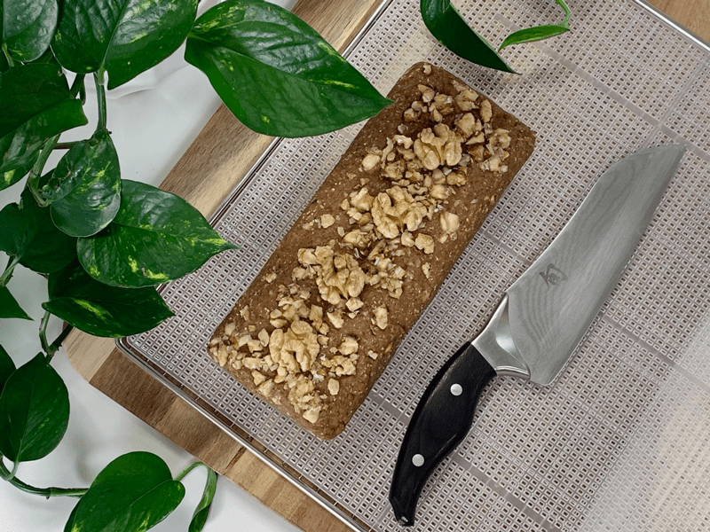
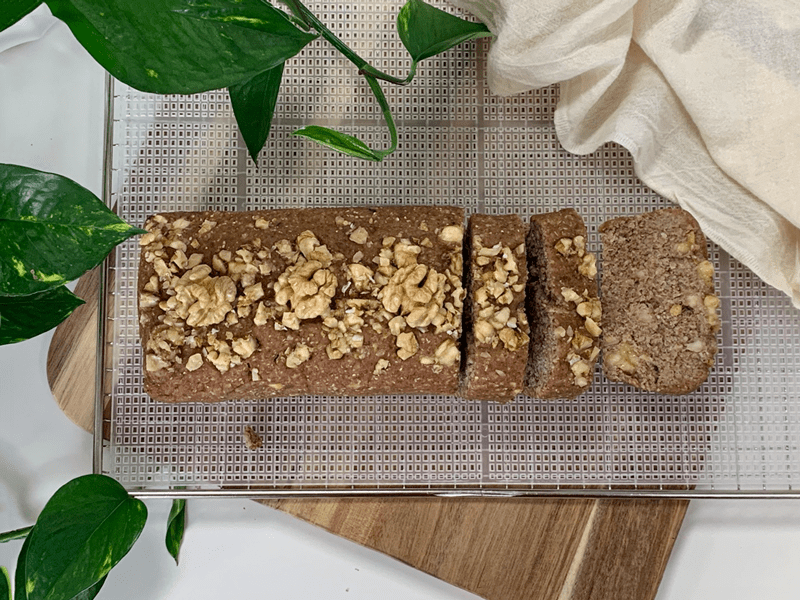
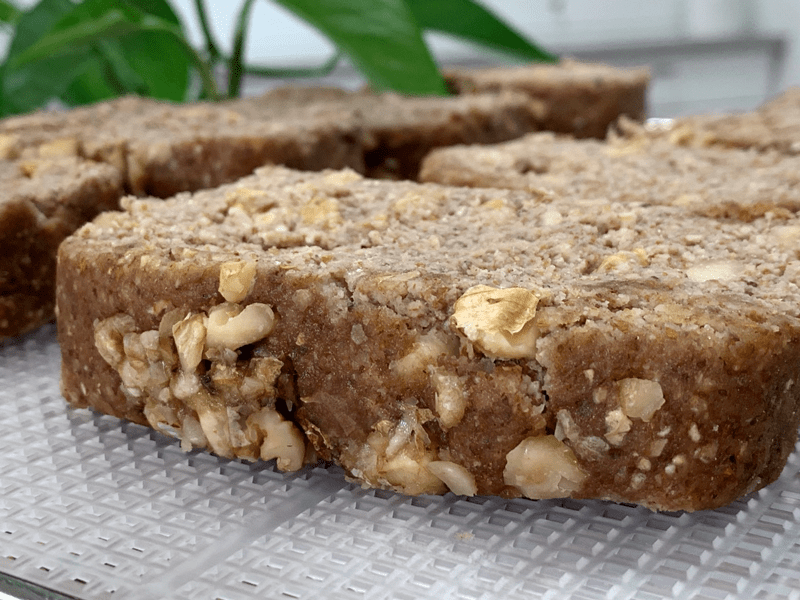
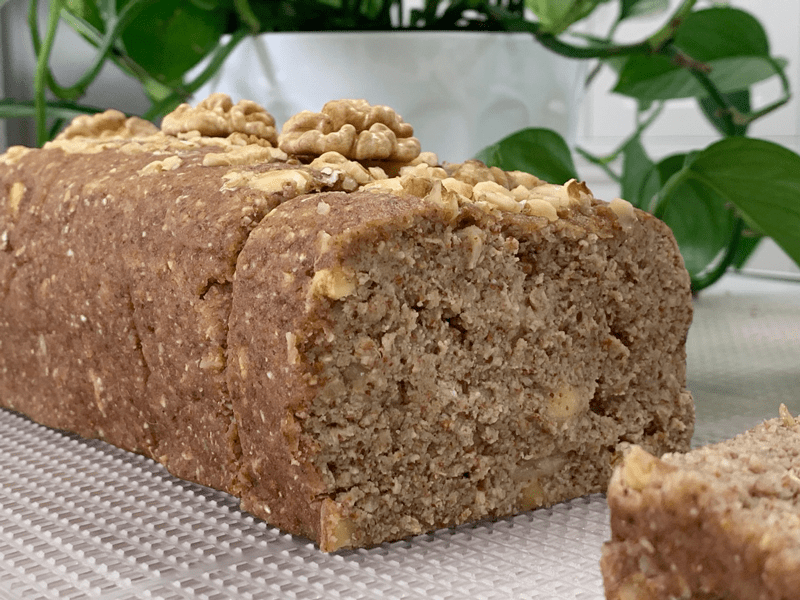
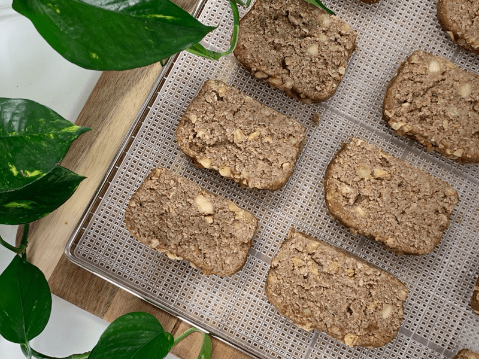

Banana Walnut Bread
– raw, vegan, gluten-free –
Who doesn’t love banana bread? It’s a moist, sweet, and cake-like bread that smells like heaven. This raw version lives up to that description beautifully! I have made many raw breads, and this combination of ingredients is fantastic. My husband and I found the balance of flavors and texture to be just about perfect.

Now, the star of the show here is (you guessed it) bananas. And not just any bananas — ripe bananas. I mean it. The kind that look a little too spotty for polite company but are just right for bold flavor. Don’t skimp here — if your bananas aren’t ripe, your bread will be bland. And nobody has time for bland banana bread. Not sure if it’s sweet enough? Sneak a taste of the dough before shaping and dehydrating. That’s not cheating, it’s quality control.

The different sweeteners also serve a second purpose in the recipe, acting as a helpful binding agent. For this bread I used three different sweeteners, and no, it’s not overkill. Each one adds its own personality to the mix.
- Dates bring a rich, mellow sweetness and they help bind everything together.
- Stevia sweetens without altering the texture or adding much flavor.
- Raw honey adds a warm, floral depth — but if you’re bee-gan (a vegan who avoids honey), feel free to swap in maple syrup or another liquid sweetener you love. A quick side note on honey: be sure to use raw, unprocessed honey if you’re going that route — some brands sneak in corn syrup (rude, right?).

Let’s circle back to those bananas for a sec. Need to ripen them faster? It’s all about ethylene gas. Sounds science-y, but it’s just something bananas (and a few of their produce pals like apples and tomatoes) naturally emit as they ripen. Trap that gas by popping your bananas in a paper bag with an apple or tomato. Voilà — nature’s speed-ripening trick.
Beyond flavor, bananas are basically nature’s multivitamin. They’re packed with vitamins A, B1, B2, B3, B5, B6, B9, C, plus minerals like calcium, iron, magnesium, phosphorus, potassium, and zinc. I mean, I’ll gladly take my supplements in the form of Raw Banana Walnut Bread — wouldn’t you?
And here’s the kicker: this bread is so moist and flavorful, you don’t need to slather anything on it. But if you’re feeling fancy (or just love your partner a lot), try it with my Coconut Date Butter. It’s a perfect match. many blessings, amie sue
 Ingredients:
Ingredients:
Dry Ingredients:
Wet Ingredients:
Hand mix in:
- 1 cup (200 g) chopped walnuts, soaked
- 2 Tbsp (16 g) walnuts, chopped for topping
- 1 banana (137 g), diced into chunks (optional)
Preparation:
- In the food processor fitted with the “S” blade, place the following ingredients: oats, flax, coconut flour, cinnamon, and salt. Pulse together until combined. Place the dry ingredients in a small bowl and set aside.
- In the same food processor bowl, combine the almond pulp, banana, date paste, sweetener, vanilla, and lemon juice. Blend till everything is well incorporated.
- Depending on how dry your almond pulp is, you may need to add water, so the dough sticks together nicely.
- If you this, add 1 Tbsp at a time.
- Add the dry ingredients to the wet ingredients, along with the nut pulp in the food processor, and mix everything well.
- Transfer the dough to a cutting board and fold in the walnuts and diced banana. Shape the mixture into a loaf and place it on the mesh sheet that comes with your dehydrator.
- Score the top of the loaf with a knife. I later use these score marks as a guide in slicing my pieces. Sprinkle the 2 Tbsp of crushed walnuts on top and gently press them in a bit.
- Dehydrate at 145 degrees (F) for 1-2 hours. This will create a crust on the outside.
- Remove from the dehydrator, place the loaf on a cutting board, and slice into pieces to the desired thickness. I did mine at about 1″ thick. Return the bread to the mesh sheet, laying the pieces flat.
- Decrease the temperature to 115 degrees (F) and continue to dehydrate for approximately. 6-10 hours.
- As an indicator, if it is dry enough, touch the center of the bread slices.
- You don’t want it to be doughy, but you also don’t want the bread to dry out too much. You decide on how dry you want the end result to be.
- The bread darkens it as it dehydrates.
- Shelf life and storage: My recommendation is to store this bread in an airtight container in the fridge for 3-5 days. The more moisture that is left in your bread, the shorter the shelf life. Therefore, the shelf life will vary depending on your drying technique. Whenever I make this bread, it never lasts very long enough to spoil. Keep in mind, the whole purpose of eating a raw diet is to eat foods at their peak of freshness, so don’t expect this bread to have a long shelf life.
- To warm the bread before eating, place it in the dehydrator set at 145°F for 5-10 minutes.
The Institute of Culinary Ingredients™
- To learn more about maple syrup by clicking (here).
- Raw honey isn’t vegan, but I still use it now and again. Read (here) why I like to.
- Learn about the beautiful characteristics of Raw Coconut Nectar (here).
- Click (here) to learn why I use stevia.
- Why do I specify Ceylon cinnamon? Click (here) to learn why.
- What is Himalayan pink salt, and does it matter? Click (here) to read more about it.
- Are oats gluten-free? Yes, read more about that (here).
- Are oats raw? Yes, they can be found. Click (here) to learn more.
- Do I need to soak and dehydrate oats? Not required but recommended. Click (here) to see why.
- Learn how to grind flaxseeds for ultimate freshness and nutrition. Click (here).
Culinary Explanations:
- Why do I start the dehydrator at 145 degrees (F)? Click (here) to learn the reason behind this.
- When working with fresh ingredients, it is essential to taste test as you build a recipe. Learn why (here).
- Don’t own a dehydrator? Learn how to use your oven (here). I do, however, honestly believe that it is a worthwhile investment. Click (here) to learn what I use.


© AmieSue.com